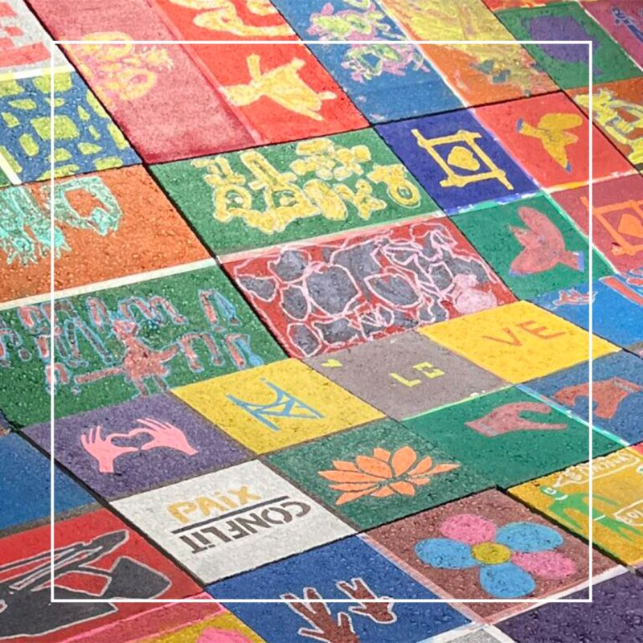
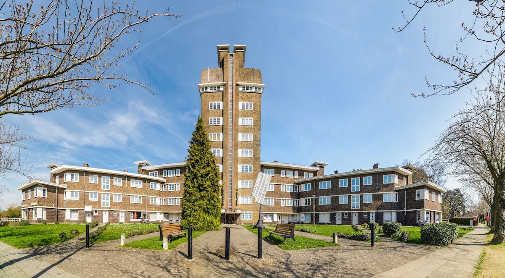

Le chemin de la paix est une idée en collaboration avec plusieurs écoles, dont l’objectif est de peindre des dalles afin de représenter différentes visions de la paix par des enfants. La finalité serait de poser toutes ces dalles afin d’en faire un chemin au centre de la commune, devant le Logis Floréal qui est un grand bâtiment regroupant des associations, ainsi que des logements sociaux.
J’ai participé à ce projet au cours de mon stage à la Vénerie, à Bruxelles, projet mené par Fabrice, animateur-coordinateur du CEC (Centre d’Expression et de Créativité) de la structure.
J’ai dans un premier temps participé à deux ateliers à l’école l’ARA avec ma maître de stage, Fabrice, une animatrice à mi-temps et un service civique. Ensuite, mon rôle fut de contacter les écoles des quartiers aux alentours afin de leur proposer de rejoindre le projet. Je suis notamment parti rencontrer une enseignante de l’école primaire “Sans Souci” avec Fabrice, la collaboration a normalement eu lieu en juin 2025. Également, les écoles “Les Etangs”, “Tenbosch” et “L’autre école” se sont montrés favorables au projet pour l’année scolaire 2025-2026.

